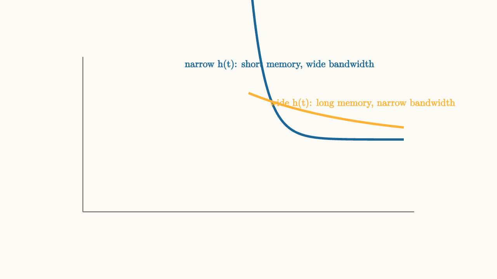

Convolution Adds Delayed Echoes
You are standing in a cathedral, clapping your hands. The clap leaves your hands and travels outward as a pressure wave. It bounces off the walls, the vaulted ceiling, the rows of wooden pews. Each reflection arrives at your ears at a slightly different time. The sound you actually hear is not the original sharp crack of the clap. It is a sum of infinitely many delayed, attenuated copies of that crack, fading as energy bleeds away into the stone and air.
This is not metaphor. This is literally what convolution computes.
If you played any sound through that cathedral (a word, a chord, a drum hit), the acoustic response would be the sum of infinitely many delayed copies of the original sound, one for each moment in time, each delayed by how long the sound has been traveling, each attenuated by how much energy has been lost in reflections.
The cathedral has an impulse response: fire a starting pistol (a sharp impulse), and record everything the room does afterward. That recording $h(t)$ is the fingerprint of the cathedral. Play any other sound through the same space, and the output is the convolution of that sound with $h(t)$.
Electrical circuits work exactly the same way. Every moment of the input launches a copy of the impulse response. The output is the sum of all those copies, alive at different stages of their decay.
Building the Integral From First Principles
Let us be precise about how this assembly works. We established last time that any input $x(t)$ can be written as an integral of scaled, time-shifted delta functions:
Think of this as slicing the input signal into infinitely thin vertical strips. At each time $\tau$, there is an infinitesimal strip with height $x(\tau)$ and infinitesimal width $d\tau$. The product $x(\tau) \, d\tau$ is the area of that strip, and the delta function $\delta(t - \tau)$ places that area exactly at time $\tau$.
Now, by LTI properties:
- The delta function $\delta(t)$ produces the impulse response $h(t)$.
- A delayed delta $\delta(t - \tau)$ produces the delayed impulse response $h(t - \tau)$ (time invariance).
- Scaling by $x(\tau)$ scales the output by the same amount (linearity).
- Adding up all contributions gives the total output (superposition).
Therefore:
This is the convolution integral. Written more compactly: $y = x * h$.
Every moment $\tau$ of the input launches a copy of $h(t)$, started at time $\tau$ and scaled by the input value $x(\tau)$ at that moment. The output at any time $t$ is the sum of contributions from all these echoes that are still ringing.
source
background = [0.985, 0.98, 0.955, 1]
camera = Camera(4.8b)
"input as sum of impulses"
mesh axes = block {
. stroke{GRAY, 1.5} Line(start: [-3.2, -1.3, 0], end: [3.2, -1.3, 0])
. stroke{GRAY, 1.5} Line(start: [-3.2, -1.3, 0], end: [-3.2, 1.8, 0])
}
mesh bars = block {
. stroke{BLUE, 3} Line(start: [-2.4, -1.3, 0], end: [-2.4, 0.45, 0])
. stroke{BLUE, 3} Line(start: [-1.8, -1.3, 0], end: [-1.8, 0.85, 0])
. stroke{BLUE, 3} Line(start: [-1.2, -1.3, 0], end: [-1.2, 1.0, 0])
. stroke{BLUE, 3} Line(start: [-0.6, -1.3, 0], end: [-0.6, 0.75, 0])
. stroke{BLUE, 3} Line(start: [0.0, -1.3, 0], end: [0.0, 0.35, 0])
. stroke{BLUE, 3} Line(start: [0.6, -1.3, 0], end: [0.6, -0.15, 0])
. stroke{BLUE, 3} Line(start: [1.2, -1.3, 0], end: [1.2, -0.55, 0])
}
mesh xlbl = color{BLUE} center{[0, 1.65, 0]} Text("input x(t) as vertical slices", 0.72)
play Write(0.9)
play Fade(0.5)
"each slice launches an echo"
mesh echo1 = stroke{ORANGE, 2.5} ExplicitFunc(|t| 1.75 * exp(-1.8 * (t + 2.4)), [-2.4, 3.0, 250])
mesh echo2 = stroke{ORANGE, 2.5} ExplicitFunc(|t| 2.15 * exp(-1.8 * (t + 1.8)), [-1.8, 3.0, 250])
mesh echo3 = stroke{ORANGE, 2.5} ExplicitFunc(|t| 2.3 * exp(-1.8 * (t + 1.2)), [-1.2, 3.0, 250])
mesh elbl = color{ORANGE} center{[2.0, 1.65, 0]} Text("each launches a copy of h(t)", 0.72)
play Write(0.9)
"output is their sum"
mesh output = stroke{GREEN, 4} ExplicitFunc(|t| 1.75 * exp(-1.8 * (t + 2.4)) + 2.15 * exp(-1.8 * (t + 1.8)) + 2.3 * exp(-1.8 * (t + 1.2)) + 1.95 * exp(-1.8 * (t + 0.6)) + 0.85 * exp(-1.8 * t), [-2.4, 3.0, 280])
mesh olbl = color{GREEN} center{[-1.5, 1.65, 0]} Text("output = sum of all echoes", 0.72)
play Write(1.0)The Flip and Slide Interpretation
The convolution integral can be computed graphically, and the graphic interpretation reveals something beautiful about what it is doing.
Rewrite the integral slightly. Instead of evaluating at the input times $\tau$, think of it as: for a fixed output time $t$, slide the impulse response backward and multiply it with the input everywhere, then integrate.
The term $h(t - \tau)$ is the impulse response flipped in time (because of the minus sign) and then shifted to the right by $t$. As $t$ increases, the flipped impulse response slides to the right across the input signal. At each position, you compute the overlap (the integral of the product), and that gives $y(t)$.
source
background = [0.985, 0.98, 0.955, 1]
camera = Camera(4.8b)
"input signal"
mesh axes = block {
. stroke{GRAY, 1.5} Line(start: [-3.2, -1.4, 0], end: [3.2, -1.4, 0])
. stroke{GRAY, 1.5} Line(start: [-3.2, -1.4, 0], end: [-3.2, 1.6, 0])
}
mesh xsig = stroke{BLUE, 3} ExplicitFunc(|t| 0.75 * exp(-0.35 * t * t) * (0.5 + 0.5 * tanh(4 * (t + 2.0))), [-3.0, 3.0, 280])
mesh xlbl = color{BLUE} center{[-1.5, 1.4, 0]} Text("x(tau): the input", 0.72)
play Write(0.9)
play Fade(0.5)
"flipped h, positioned at t = -1"
mesh hflip1 = stroke{ORANGE, 3} ExplicitFunc(|t| 1.2 * exp(-1.6 * (-1.0 - t)), [-3.0, -1.0, 220])
mesh pos1 = color{ORANGE} center{[-1.0, 1.55, 0]} Text("h(t-tau) flipped, at t=-1", 0.68)
play Fade(0.7)
"slide right to t = 0"
mesh hflip2 = stroke{ORANGE, 3} ExplicitFunc(|t| 1.2 * exp(-1.6 * (0.0 - t)), [-3.0, 0.0, 220])
mesh pos2 = color{ORANGE} center{[0.0, 1.55, 0]} Text("slid to t=0, overlap grows", 0.68)
play Trans(1.0)
"slide right to t = 1"
mesh hflip3 = stroke{ORANGE, 3} ExplicitFunc(|t| 1.2 * exp(-1.6 * (1.0 - t)), [-3.0, 1.0, 220])
mesh pos3 = color{ORANGE} center{[1.0, 1.55, 0]} Text("slid to t=1, overlap at peak", 0.68)
play Trans(1.0)The overlap at each slide position is the value of the output at that moment. This graphical picture makes convolution tangible: you are literally sliding one function across another and measuring how much they align.
The RC Circuit as a Fading Weighted Average
For the RC low-pass circuit, $h(t) = \frac{1}{RC} e^{-t/RC} u(t)$. Plugging this into the convolution integral gives:
Look at the weight $e^{-(t-\tau)/RC}$. When $\tau$ is close to $t$ (recent input), the exponent is small and the weight is close to one. The circuit pays attention to what just happened. When $\tau$ is far from $t$ (old input), the exponent is large and the weight is exponentially small. Ancient history barely matters.
The circuit is computing a weighted average of the input's past, with more recent history weighted more heavily. The exponential kernel is the weighting function.
This is why the RC circuit smooths signals. Sharp features (rapid changes in the input) get averaged out because the circuit is responding to a history, not just the present instant. If the input suddenly jumps, the output catches up gradually as the capacitor charges.
source
param tau = 0.8
background = [0.985, 0.98, 0.955, 1]
camera = Camera(4.8b)
"input and output"
mesh axes = block {
. stroke{GRAY, 1.5} Line(start: [-3.2, -1.4, 0], end: [3.2, -1.4, 0])
. stroke{GRAY, 1.5} Line(start: [-3.2, -1.4, 0], end: [-3.2, 1.6, 0])
}
mesh xin = stroke{BLUE, 2.5} ExplicitFunc(|t| 0.8 * sin(2.2 * t) + 0.35 * sin(6.0 * t + 0.4), [-3.0, 3.0, 300])
mesh yout = stroke{ORANGE, 3.5} ExplicitFunc(|t| 0.8 * sin(2.2 * t - 2.2 * $tau) / sqrt(1 + (2.2 * $tau) * (2.2 * $tau)) + 0.35 * sin(6.0 * t + 0.4 - 6.0 * $tau) / sqrt(1 + (6.0 * $tau) * (6.0 * $tau)), [-3.0, 3.0, 300])
mesh lbl1 = color{BLUE} center{[-2.0, 1.55, 0]} Text("input x(t)", 0.72)
mesh lbl2 = color{ORANGE} center{[2.0, 1.55, 0]} Text("output y(t)", 0.72)
mesh taul = color{DARK_GRAY} center{[0, -1.7, 0]} Text("drag tau: longer memory means more smoothing", 0.68)
play Write(0.9)
play Fade(0.5)
"increase memory"
tau = 2.0
yout = stroke{ORANGE, 3.5} ExplicitFunc(|t| 0.8 * sin(2.2 * t - 2.2 * $tau) / sqrt(1 + (2.2 * $tau) * (2.2 * $tau)) + 0.35 * sin(6.0 * t + 0.4 - 6.0 * $tau) / sqrt(1 + (6.0 * $tau) * (6.0 * $tau)), [-3.0, 3.0, 300])
play Lerp(1.2)Drag the time constant and watch the output. With small $\tau$, the output closely tracks the input. With large $\tau$, the output is a smooth, attenuated, and delayed version. The high-frequency wiggles are the most smoothed because they average out faster.
The Mathematical Properties of Convolution
Convolution has several algebraic properties that are worth knowing.
Commutativity: $x * h = h * x$.
Mathematically, you can swap the roles of input and impulse response. This makes sense if you think of the flipping interpretation: flipping $h$ and sliding it across $x$ gives the same overlap as flipping $x$ and sliding it across $h$.
Physically in a circuit, convolution is directional: the input comes first, the impulse response follows. But computationally, the two can be swapped.
Associativity: $(x * h_1) * h_2 = x * (h_1 * h_2)$.
If you cascade two LTI circuits with impulse responses $h_1$ and $h_2$, the overall system has impulse response $h_1 * h_2$. This is a powerful simplification: analyze each stage separately, convolve their impulse responses, and you have the complete cascade.
Distributivity over addition: $x * (h_1 + h_2) = x * h_1 + x * h_2$.
A circuit that is the parallel combination of two systems has impulse response $h_1 + h_2$.
Memory Length and Bandwidth
The width of $h(t)$ tells you how long the circuit remembers its input. A narrow $h(t)$ concentrated near $t = 0$ means short memory: the output depends mostly on very recent input, making it responsive to fast changes. A wide $h(t)$ spread over many time constants means long memory: the output is a long-duration average of the input, and it responds slowly to changes.

source
background = [0.985, 0.98, 0.955, 1]
camera = Camera(4.8b)
mesh diagram = block {
. stroke{GRAY, 1.5} Line(start: [-3.2, -1.4, 0], end: [3.2, -1.4, 0])
. stroke{GRAY, 1.5} Line(start: [-3.2, -1.4, 0], end: [-3.2, 1.6, 0])
. stroke{BLUE, 3.5} ExplicitFunc(|t| 3.5 * exp(-3.5 * t), [0, 3.0, 280])
. stroke{ORANGE, 3.5} ExplicitFunc(|t| 0.9 * exp(-0.45 * t), [0, 3.0, 280])
. color{BLUE} center{[0.6, 1.45, 0]} Text("narrow h(t): short memory, wide bandwidth", 0.68)
. color{ORANGE} center{[2.2, 0.7, 0]} Text("wide h(t): long memory, narrow bandwidth", 0.68)
}
"memory length"
play Fade(0.8)This is not a coincidence. There is a precise mathematical relationship (the uncertainty principle for Fourier analysis): a function and its Fourier transform cannot both be narrow simultaneously. Short memory in time implies wide bandwidth in frequency, and vice versa.
Long-memory circuits smooth the input heavily, which means they reject high-frequency components. Their bandwidth is narrow. Short-memory circuits pass everything quickly. Their bandwidth is wide.
Convolution in Practice
Before there were computers, engineers computed convolutions graphically, by physically sliding paper curves past each other and estimating the area of overlap. The technique is tedious but genuinely illuminating. Each time position of the sliding kernel gives one output value.
With computers, convolution becomes multiplication in the frequency domain (a fact we will establish when we get to the Fourier transform), making it computationally cheap. But the time-domain interpretation remains the right mental model for understanding what circuits actually do.
The audio world uses convolution constantly. When a music producer wants to add the sound of Carnegie Hall to a dry recording made in a studio, they convolve the studio recording with the impulse response of Carnegie Hall measured by firing a starting pistol. The mathematics of circuit analysis and room acoustics are the same.
The next essay introduces the Laplace transform, which turns convolution (a hard integral) into multiplication (easy algebra). But before we get there, it is worth sitting with the time-domain picture a while longer, because it is the honest physical story. The circuit is accumulating a weighted history of its inputs, and the weights are exactly $h(t)$. Everything follows from that.